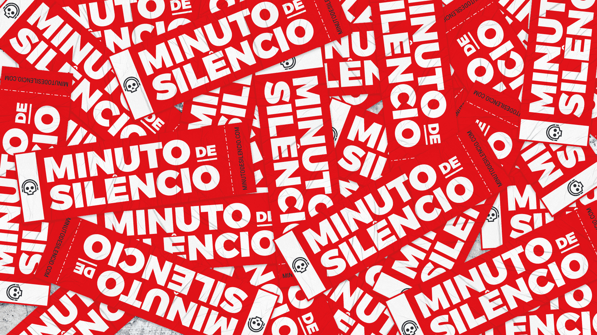
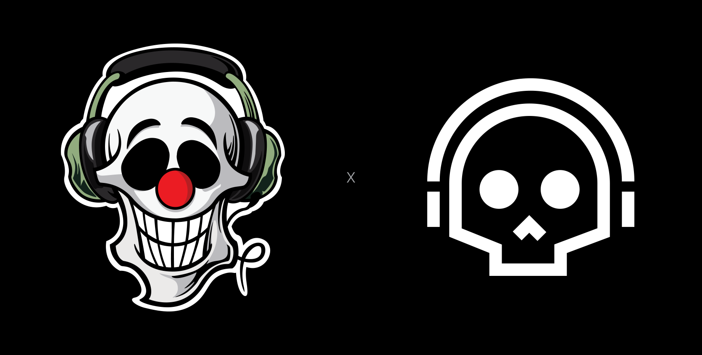
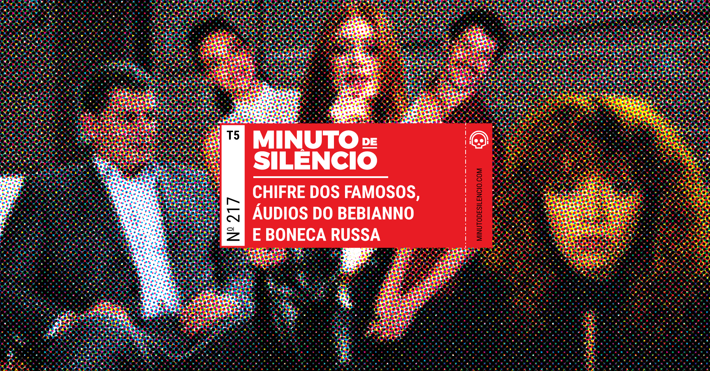
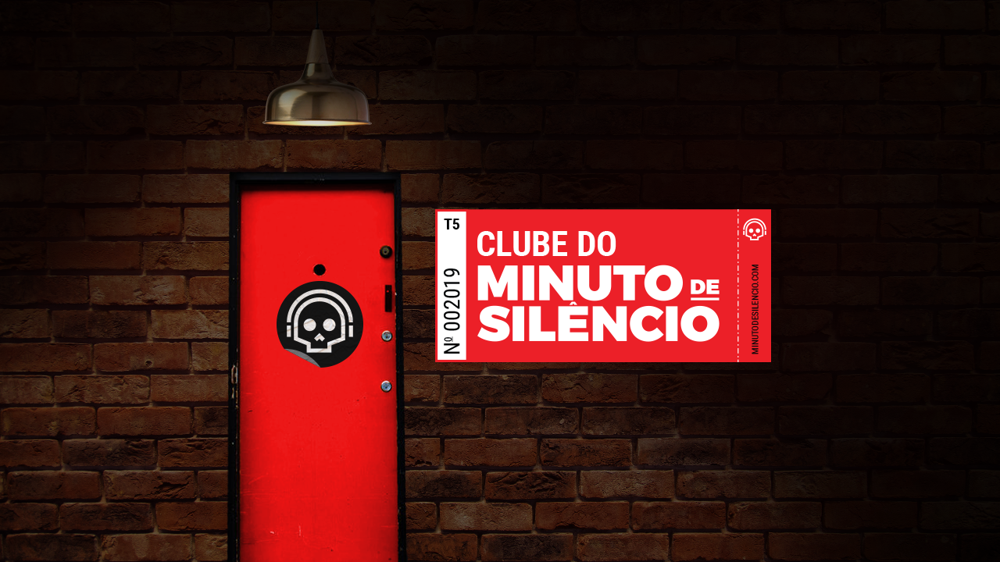
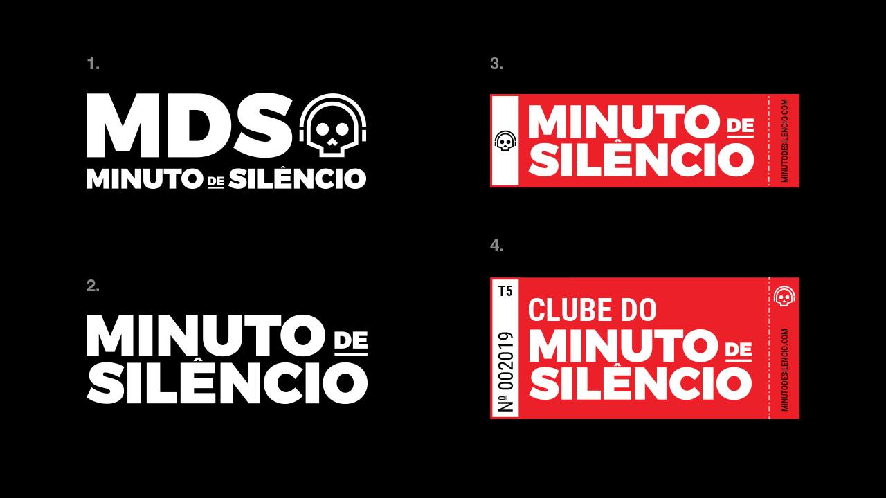

MDS Redesign
— Minuto de Silêncio Comedy Podcast Logo Rework
⭢ Abstract
Since 2014, Minuto de Silêncio Podcast has a growing audience, playing a big part in the present scenario of Comedy Podcasts in Brazil. With more than three million downloads through its 250+ episodes, MDS podcast has had notorious guest from the comedy scene from Brazil, ranging through TV actors, writers, directors and many other influential personalities from the media and the internet. Given its growth, the brand had to adapt along with the evolving format, appealing to a more broader audience, now the podcast talks more about current events in Brazil and in the world, but never losing its comedic nature.
⭢ Made With
Illustrator, Photoshop, Wordpress.
⭢ Keywords
Logo Rework, Branding, Webdesign, Podcast.
⭢ Links
minutodesilencio.com
⭢ Concept
The first and original logo was created appealing to three main characteristics of the podcast; that it was a podcast (headphones), that it was a comedy podcast (clown nose) and that its humor would tend, sometimes, to a more “dark” type of humor (skull).
The main objective when creating the new logo was to make it more simple, without so much noise, information and colors, but without losing its essence. Considering that through the years they gain a lot of notoriety through media, through other podcasts and by making live presentations, and that in this new phase, they wanted to be seen as more serious and less childish, at least one element had to go, and that was the clown nose.
The simplification of the logo was intended to give more attention to the name of the podcast rather than the logo itself. Previously, the logo tended to stick more than the name and it would stop people from finding the podcast online. With the new logo, the skull with headphones is always applied smaller than the lettering (with the exception of social media avatars) and sometimes separate but within a composition.

Old logo on the left, new on the right.
⭢ Implementation
The new branding is applied throughout the podcast social media, website and its display images for each episode. The main composition is the one the display image for each episode, referencing a entrance ticket to a show. Each composition contains the Podcast name, the season, the website, the number and name of each episode applied over a halftone image composition that sums each episode.
The ticket composition is also applied for other banners, such as the sponsors page, making the same references, but slight adaptations given its static nature. The main advantage of this application is the brand malleability, where the composition changes without losing its identity, allowing it to be molded accordingly with the necessity.

An example of a unique episode thumbnail.

Padrim.com.br sponsor header image.

1. Complete Logo — 2. Pure Lettering — 3. Generic Ticket composition — 4. Padrim.com.br Static Composition.